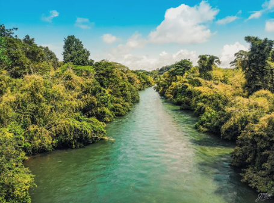

My Travel Experience
Have you ever wondered what it feels like to swim in a river of liquid emerald? Norcasia, Caldas, is rapidly becoming the ultimate hidden gem for nature lovers in Colombia. Located in the heart of the Magdalena Medio region, this "Water Capital" offers an escape into a world of vibrant greens and crystal-clear currents.
From the breathtaking Amaní Reservoir to the serene flow of the La Miel River, Norcasia is a sanctuary where the jungle meets the water in spectacular fashion.


